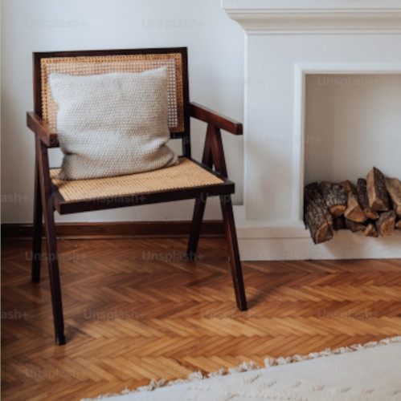
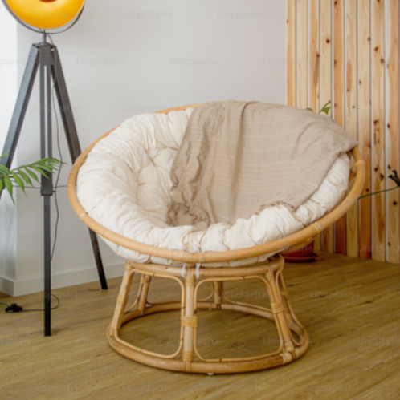
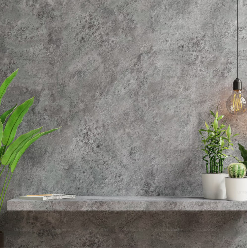

Here at The Garden, we believe that every home deserves to feel alive. If you're looking for a quick fix or seasonal change, find all your home inspiration, shopping needs, seasonal decorating, and more in our style guides.
Not sure what your style is? Take our quick survey to find out!
Home Decor
Magnolia Home Decor
Our team loves the shopping experience at Magnolia for all things modern farmhouse! If you're looking for something more familiar, Target also carries Magnolia's Hearth & Hand line.
Pottery Barn
Pottery Barn is another great choice for affordable home decor. If you lean more toward coastal or boho style decor, make sure to check it out!
Furniture, Finishes, & Equipment
Lightology
If you're looking for some new lighting fixtures or lamps, Lightology makes it easy! Sourcing from lots of different vendors, you can find whatever you need in whatever your style is.
IKEA
It gets a bad rap, but IKEA can be a great way to get affordable furniture, as long as you don't mind a little DIY. This Swedish company was founded on the Scandinavian design principles of affordability and good craftsmanship.
Ergonomia
If you're willing to spend a bit more on your furniture, Ergonomia has a large selection of furniture to choose from.
Maiden Home
One of my personal favorites is Maiden Home. If you are looking for high-end, scandinavian or japandi style furniture that will last you a lifetime, Maiden Home provides gorgeous statement pieces that are handcrafted just for you!
Elements of Design
These are the basic components of any artwork, design, or other creative piece. They work together using the Principles of Design (below), to create a cohesive, aesthetic result.
- Line: Not everything has to be straight, "clean" lines. Try mixing straight and curved; horizontal, vertical, and diagonal, thick and thin, and even implied lines for some extra creativity.
- Shape: "Shape language" is used to create dimension and communicate intentions. Consider the two chairs shown below. One is composed of rectangles, and communicates a more structured, formal look. The other is based on circles, and gives a more relaxed feel. The good news is, it doesn't have to be circles or squares! Squiggles and blobs are also shapes - called organic shapes - and can help you get creative.


- Color: Don't be scared of color! Your house doesn't have to be white and grey, if that's not your style. Just make sure to follow a color scheme. This can be a primary, complementary, or other color scheme formula. Try changing the value or saturation of your colors too! If you need some inspiration, you can browse our color palette style guide.
- Value: Using different values can bring dimension to your space. As mentioned above, value is also a part of color; it's not just for black and white. It is common to see darker colors closer to the ground, and ligher colors closer to and on the ceiling. This strategy mimics the natural world and grounds your space.
- Form: Much like shapes, form is used to create dimension and interest in your space, but form is concerned with all three dimensions. If the chairs from before are based on shapes, then form would be the way those shapes interact and come together to create the final result. Form tells you whether the chair will be cushiony or firm, for example.
- Texture: When you look at a cactus, you know the spines will be prickly, even if you haven't touched it yet. This is because of texture. However, there is also visual texture, which is basically your eyes telling you that something would be soft, or rough, or slimy even though you can't actually feel it. For example, the image is smooth to the touch, but looks as though it should be gritty and rough. Using texture in your house can bring a subtle interest that doesn't overwhelm your space, so you can still add fun elements like colors and patterns.

- Space: Have you ever wondered why your living room looks so full, even though you never have enough seating at gatherings? This may be because of space. If your couch looks heavy and imposing, it takes up more visual space than the physical space it takes, making the room look more crowded than it actually is. Make sure to balance the amount of heavy-looking items with lighter, more open-looking pieces.
Principles of Design
These are the second level of components used by creators, which are applied to the Elements of Design above.
- Balance: If you put your bedroom on a scale, would it lean to one side or another? This is one way to consider whether your space is balanced. If one side of your space is crammed full and the other side is empty, it may feel off-kilter. This also applies to vertical space. If all of the elements in your space are the same height (or plane) then the space may feel bottom-heavy. Try placing some large artwork, long curtains, or tall floor lamps in your space to break up that plane.
- Emphasis: If you have a fireplace in your living room, it is likely the focal point of that room. Perhaps it is very large, or a constrasting color from the rest of the room, or covered with highly-textured river rock. Any one of these elements could make it a focal point. Every room has emphasis, but not every room needs a focal point. If you have something you would like to draw attention (like that fireplace you spent a lot of money on), then it should be a focal point. If there is nothing significant in the room, then let the room decide it's own emphasis.
- Movement: Have you ever had to decide where to sit at a formal dinner, or choose a place on the couch for movie night? You were probably guided to the most suitable place by the principle of movement. Movement brings interest to a space, but also guides people on how to navigate through a space, or where to reside within it.
- Pattern & Repetition: Use pattern carefully, but don't be scared of it! Too many different patterns can overwhelm a space like a kaleidoscope. But if you'd like to use patterns, try choosing one or two, and varying factors like the size and contrast of those patterns.
- Rhythm: As opposed to repetition or pattern, rhythm is more about the overall feel and continuity of the space. This can be achieved using a certain finish, like a patterned tile, or decoration, like a style of artwork.
- Proportion: One of the easiest to learn, yet hardest to master, proportion demands absolute coordination between elements of a space. It combines balance and unity with size and contrast. Luckily, the basics mostly dictate that no elements look too small or too big for your space.
- Variety: You don't want everything to look identical, or you would end up with a very boring space. Variety means making things strategically different. It must be balanced with harmony to reach a happy medium of new and repeated elements.
- Harmony: Closely linked with variety, harmony means all the elements in a space should feel like they fit. This is basically a more technical way to define your style. This can be defined by a consistent color scheme, shape language, theme of finishes and many other commonalities.